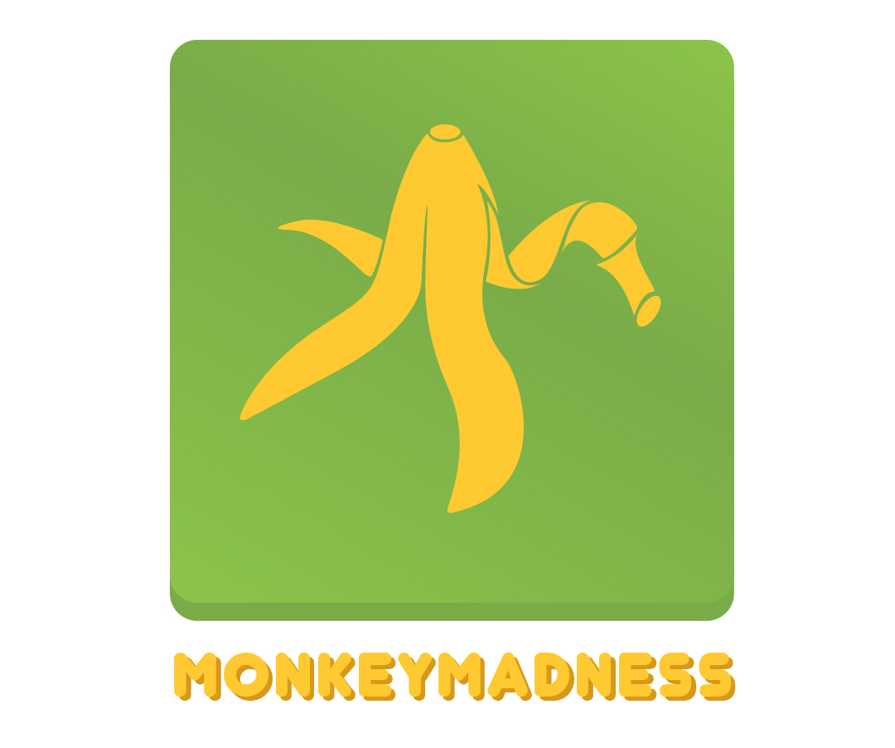
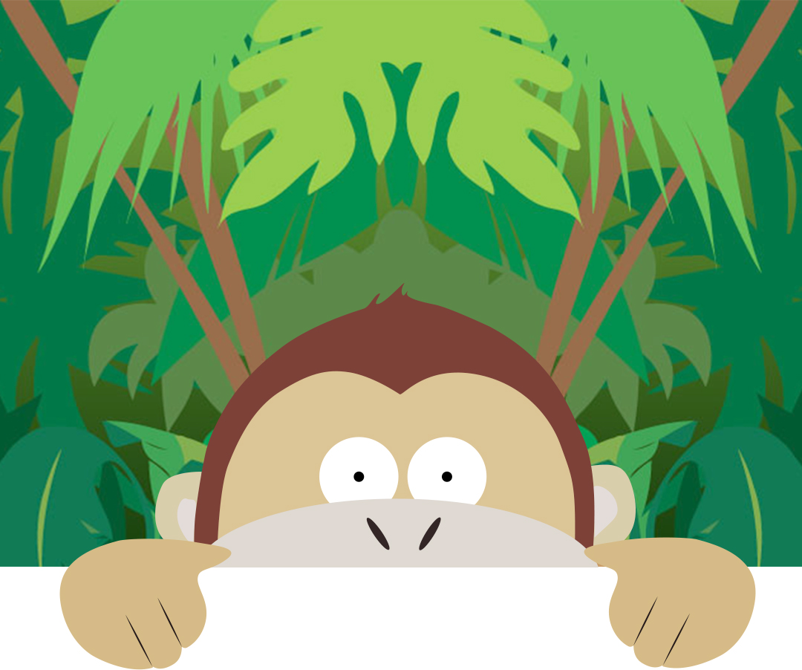
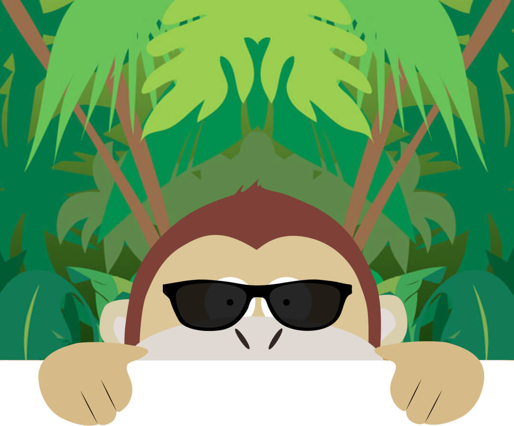

<!DOCTYPE html>
<html ng-app="ionicApp">
  <head>

    <meta charset="utf-8">
    <meta name="viewport" content="initial-scale=1, maximum-scale=1, user-scalable=no, width=device-width">

    <title>Monkey Madness</title>
    <link rel='stylesheet prefetch' href='https://cdn.rawgit.com/Dogfalo/materialize/master/dist/css/materialize.css'>
    <link  href="css/style.css" rel="stylesheet">
    <link href="css/wheel.css" rel="stylesheet">
    <link href="css/responsive.css" rel="stylesheet">
    <link href="http://code.ionicframework.com/1.0.0-beta.13/css/ionic.css" rel="stylesheet">
    <link href="http://netdna.bootstrapcdn.com/font-awesome/4.1.0/css/font-awesome.min.css" rel="stylesheet">
    
    <script src="https://ajax.googleapis.com/ajax/libs/jquery/1.9.0/jquery.min.js"></script>
    <script src="https://cdn.firebase.com/js/client/2.2.1/firebase.js"></script>
    <script type="text/javascript" src="js/eersteLot.js"></script>
    <!--<script type="text/javascript" src="js/nieuwLot2.js"></script>-->

    <script type="text/javascript" src="http://code.ionicframework.com/1.0.0-beta.13/js/ionic.bundle.js"></script>
    <script src='https://cdn.rawgit.com/Dogfalo/materialize/master/dist/js/materialize.js'></script>
    <script type="text/javascript" src="js/wheel.js"></script>
    <script type="text/javascript" src="js/opdrachten.js"></script>
    <script type="text/javascript" src="js/mainFunctions.js"></script>
    <script type="text/javascript" src="js/index.js"></script>
    <script type="text/javascript" src="js/maaklobby.js"></script>
    <script type="text/javascript" src="js/joinlobby.js"></script>

  </head>

  <body>

    <ion-nav-view></ion-nav-view>

    <!-- SIDE NAVIGATION -->
    <script id="templates/menu.html" type="text/ng-template">
      <ion-side-menus enable-menu-with-back-views="false">

        <ion-side-menu-content>
          <ion-nav-bar class="bar-positive" id="bar-main"> 

            <ion-nav-buttons side="right"> 
              <a href="#/app/tabs/home" class="button button-icon nav-clear ion-ios7-home-outline" id="barHomeIcon" onclick="stopSound();"></a>
              <a href="#/app/tabs/home" class="button button-icon nav-clear ion-ios7-close-outline" id="barLeaveIcon" onclick="verwijderGebruikers(); stopGeluid();"></a>
              

            </ion-nav-buttons>

            <ion-nav-buttons side="left">
              <button class="button button-icon button-clear ion-navicon" menu-toggle="left" id="sideMenuIcon"></button>
            </ion-nav-buttons>

          </ion-nav-bar>      
          <ion-nav-view name="menuContent"></ion-nav-view>
        </ion-side-menu-content>

        <ion-side-menu side="left">

          <ion-content>
            
            <ion-list>
              <div class="sideMenuItem" id="lobbyNumber">  </div>
              
              <ion-item nav-clear menu-close ui-sref="app.spelregels" onclick="stopSound();" >
                <div class="sideMenuItem" > Spelregels </div>
              </ion-item>
              <ion-item nav-clear menu-close ui-sref="app.contact"  onclick="stopSound();">
                <div class="sideMenuItem"> Contact </div>
              </ion-item>
              
            </ion-list>

          </ion-content>

        </ion-side-menu>

      </ion-side-menus>
    </script>

    <!-- TAB NAVIGATION -->
    <script id="templates/tabs.html" type="text/ng-template">
      <ion-tabs class="tabs-icon-only">

        <ion-tab title="home" ui-sref="app.tabs.home" icon-on="ion-ios7-home-outline"  icon-off="ion-ios7-home-outline">
          <ion-nav-view name="home"></ion-nav-view>
        </ion-tab>

        <ion-tab title="ranking" ui-sref="app.tabs.ranking" icon-off="ion-ios7-people-outline" icon-on="ion-ios7-people-outline">
          <ion-nav-view name="ranking"></ion-nav-view>
        </ion-tab>

        <ion-tab title="chat" ui-sref="app.tabs.chat" icon-off="ion-ios7-chatbubble-outline" icon-on="ion-ios7-chatbubble-outline">
          <ion-nav-view name="chat"></ion-nav-view>
        </ion-tab>

      </ion-tabs>
    </script>

    <!---->
    <script id="templates/tabs-home.html" type="text/ng-template">
      <ion-view view-title="home" >
        <ion-content>
          
          <div class="center-align">


            <button id="btn" ui-sref="app.deelnemen">Deelnemen</button>
            <button id="btnDeelname" ui-sref="app.lobbyadmin">  + </button>
            
          </div>

        </ion-content>
      </ion-view>
    </script>

    <!-- TAB RANKING -->
    <script id="templates/tabs-ranking.html" type="text/ng-template">
      <ion-view view-title="ranking">
        <ion-content class="notActivePage">

          
              <div class="center-align">

                <h2> Niets te zien hier </h2>
                <h3> Hier wordt aan gewerkt!</h3>
                
              </div>
          
        </ion-content>
      </ion-view>
    </script>

    <!-- TAB CHAT -->
    <script id="templates/tabs-chat.html" type="text/ng-template">
      <ion-view view-title="chat">
        <ion-content class="notActivePage">

          
              <div class="center-align">

                <h2> Niets te zien hier </h2>
                <h3> Hier wordt aan gewerkt!</h3>
                
              </div>
          
        </ion-content>
      </ion-view>
    </script>

    
    <!-- <script src='http://cdnjs.cloudflare.com/ajax/libs/jquery/2.1.3/jquery.min.js'></script>-->
    
    
  </body>
</html>
